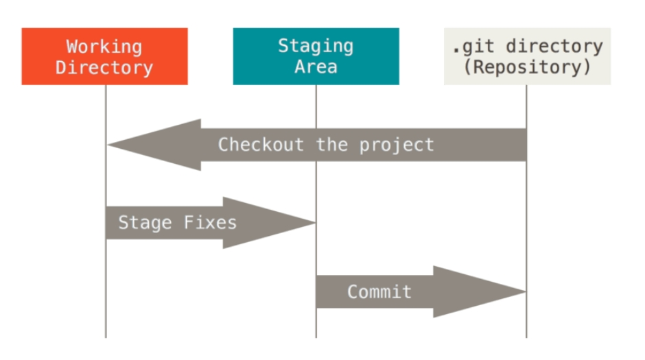
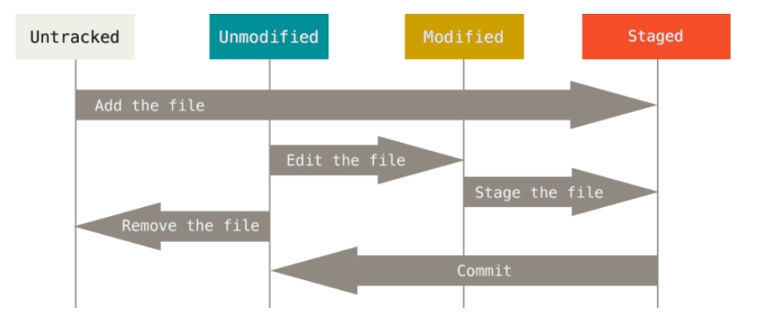

Git小记
前言
Git 是一个分布式版本控制系统，也就是说，他是一个版本控制系统，而且是分布式的。
版本控制系统: 文件的修改历程中保留修改历史，让你可以方便地撤销之前对文件的修改操作。
分布式: 在Git中的含义是每一台电脑都可以在本地存储完整的代码库。
Git相对于SVN的好处主要有去中心化，换而言之，不必实时依赖于中心服务器，开发效率提高。但只要是版本控制系统，它们就都需要解决冲突，再进行保存。
几个概念
- 三个工作区域: 工作区、暂存区、仓库
 - 文件的生命周期: 未跟踪、未修改、已修改、已暂存。

基本操作
- 设置用户名和邮箱
git config --global user.name "your_name" git config --global user.email "your_email@example.com" - 如果需要和远程仓库相连，可以生成ssh密钥
ssh-keygen -t rsa -C "your_email@example.com" - 初始化仓库
# 初始化本地仓库 git init # 直接克隆远程仓库 git clone [url] - 暂存到暂存区
# 暂存指定文件，可以用空格隔开以添加多个 git add [filenmae] # 暂存新文件(new)和被修改(modified)文件，不包括被删除(deleted)文件 git add . # 提交被修改(modified)和被删除(deleted)文件，不包括新文件(new) git add u # 暂存所有变化 git add -A - 提交到本地仓库
不太推荐使用# 一行简短说明信息 git commit -m 'info' # 可多行，更规范。 git commitgit commit -m指令，进行简写提交信息，因为提交的信息量有限。git commit将暂存区的文件，提交到本地仓库中。开启默认编辑器（一般是Vim），进行提交信息填写。 - 提交/拉取远程仓库
push操作一般是在完成阶段性代码后，上传到远程Git服务器上的操作。git pull git push
个人独立开发，基本不会遇到push冲突的问题，但如果是团队开发，因为Git的分布式，可以让团队成员同时进行开发，这就会导致先后push，所以一般的做法，是先pull，拉取远程仓库，查看冲突，解决冲突，再push。
Vim基本使用
直接使用git commit会默认打开Vim进行提交信息填写，所以需要了解一些基本的Vim操作,以 # 开头的是注释，不会加入提交信息。
# Please enter the commit message for your changes. Lines starting
# with '#' will be ignored, and an empty message aborts the commit.第一次进入Vim时，是普通模式，当你需要填写信息时需要进入插入模式，这个时候就需要按下i键进入。当填完信息之后，需要从插入模式回到普通模式，此时需要按下esc键。
最后，想要退出Vim编辑器了，得先进入命令行模式，在普通模式下输入:就可以进入。 进入命令行模式后输入wq回车，保存并退出Vim
# 常用的一些命令
:q 退出
:q! 强制退出，不进行保存
:wq 保存并退出
:wq! 强制保存并退出Git常用命令速查表

参考链接
Pro Git
从只会git add .的菜鸟到掌握git基本功能
git add -A 和 git add . 的区别
Git 协同与提交规范
Git 常用命令速查表
Google广告
假装这里有广告